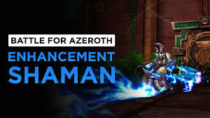

About Buzo
Buzo is the GOAT of shamans, enhancement is what he does and no one can beat him.
BFA enhancement shaman
Buzo's Characteristics
- He wields two weapons
- He has heritage armor
- He can also heal, but rather not
Friends
Buzo plays with MYLLY sometimes. Click on the links below to read more about shamans: